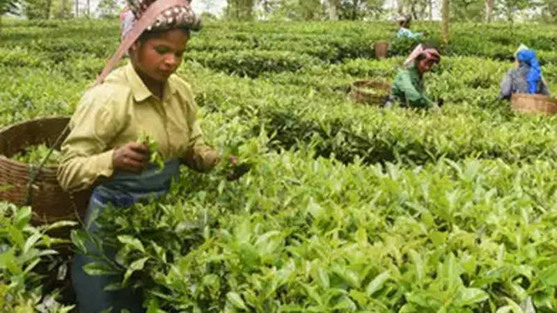
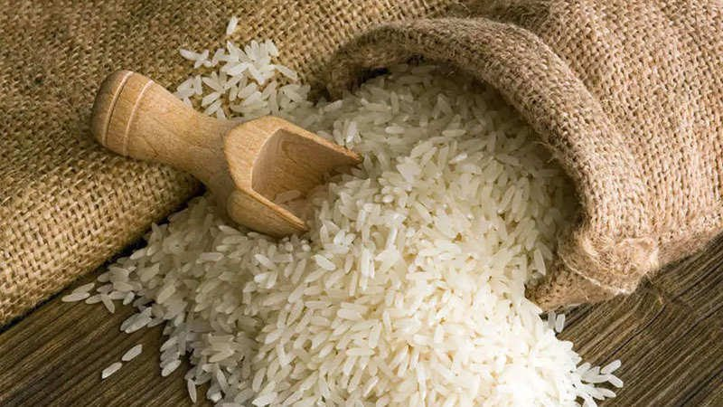
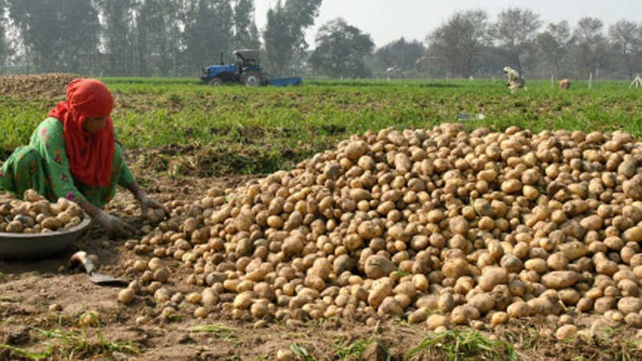
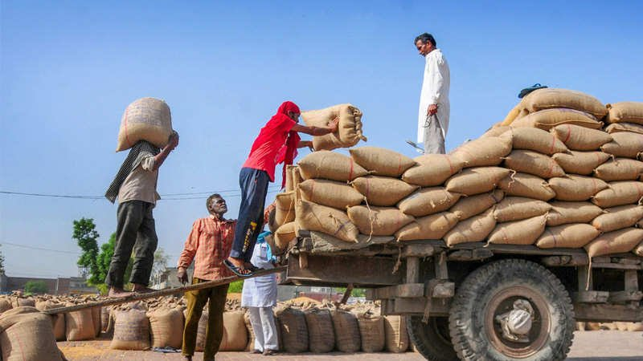
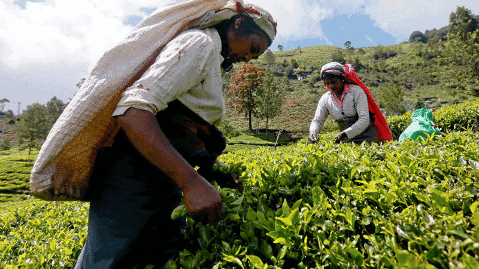

AGRICULTURE DEPARTMENT
AGRICULTURE DEPARTMENTAgriculture News

Govt decides not to offer soft loans under SDF to sugar mills for a year

First harvest of tea in Assam, West Bengal hit by dry spell in March

Sugar sector growth likely to improve in Q4FY21, says Indian Ratings and Research

2021 Kharif sowing slowly picks up; over 56 lakh hectare coverage so far

Potato prices crash 50% to Rs 5-6/kg in both producing and consuming areas

Govt says 44% of rabi crops area harvested so far
